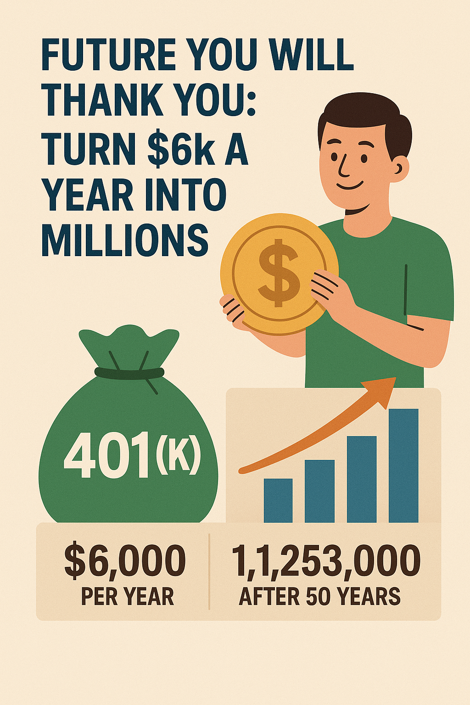

Future You Will Thank You: Turn $6K Into Millions
A 401(k) is an employer-sponsored retirement savings plan with special tax benefits designed to help you build wealth for the future. There …
Frozen — needs counselAll 55 real posts from the live site's archive are represented below with their real titles, dates, and body copy — verified against the live sitemap, not a partial sample.
35 of 55 posts are clean, general-education content migrated as-is. 14 of 55 touch fee/fiduciary claims, named third parties, or detailed client-case figures and are flagged for compliance review, with the specific concern noted on each post. 6 of 55 are FROZEN — a real court case, a third-party investment offer, performance-based claims, and partisan political commentary — and need outside counsel review before any further use, independent of anything else on this site.
The 13-HIGH/46-MEDIUM classification referenced in an earlier brief was not accessible from this session (see CONTENT-INVENTORY.md); the flags above are this session's own conservative read of the real content, not that audit.

A 401(k) is an employer-sponsored retirement savings plan with special tax benefits designed to help you build wealth for the future. There …
Frozen — needs counselThere's a world of opportunity in equities
Frozen — needs counselThis blog post explores a recent Texas divorce case highlighting the importance of protecting your financial interests, even when a prenupti…
Frozen — needs counselThe current market environment, marked by geopolitical tensions and economic uncertainties, might appear daunting to investors, with many ex…
Frozen — needs counselIn the ever-evolving investment landscape, astute investors are persistently on the lookout for opportunities that combine stability with su…
Frozen — needs counselThe genesis of no-fault divorce
Frozen — needs counselIn a financial advisory relationship, it is important for investors to understand the multitude of fees they may be required to pay.
Needs compliance reviewLast week, I wrote about investment fees in my blog, "Are My Dollar Bills Transparent?" I was lucky to hear from a colleague of mine who sha…
Needs compliance reviewWritten by Jennifer Failla.
Needs compliance review
Not a month goes by when I open an industry magazine and find articles asking the same three questions: What is a fiduciary? Who is a fiduci…
Needs compliance reviewSince January of this year, we have been working hard to reduce allocations around long-duration bonds. Protecting our clients' money, incre…
Needs compliance reviewEach winter, I spend a lot of time doing what we call practice management. Many things have happened this last year — we updated our busines…
Needs compliance reviewWe are proud to announce that we are changing our company name from Failla Financial Management, LLC to Strada Wealth Management, LLC.
Needs compliance reviewFor parties seeking an alternative route for divorce, mediation is the best option. However, the high price tag associated with mediation ca…
Needs compliance review
When people are considering a divorce, one of the questions they often forget to ask themselves is, "How will this divorce affect my ability…
Needs compliance reviewRetirement accumulation isn't just about the ending balance in your account, but what you can do while accumulating that still allows you to…
Needs compliance reviewThese last few years, I've participated in many collaborative divorce cases as a financial neutral. When hired as a client advocate rather t…
Needs compliance reviewI often advise clients on prenuptial agreements when they find love again. But some very religious people cannot have a prenup because their…
Needs compliance reviewInflation. When prices rise, the purchasing power of your hard-earned savings erodes, leaving you with less real wealth than you started wit…
Needs compliance reviewLet's face it, being a millennial is a trip — you're told to chase your passions, but student loan bills hit harder than a double shot of es…
Needs compliance reviewWelcome to our detailed series aimed at guiding you through the intricacies of planning retirement. Whether you're commencing your career or…
MigratedAs you move into your retirement years, it's crucial to refine both your investment and healthcare strategies.
MigratedNavigating retirement savings plans is vital for a secure financial future. This guide covers Individual Retirement Accounts (IRAs) and 401(…
MigratedYou've tackled debt, established an emergency fund, and now you're ready to make your money work for you — it's time to venture into investi…
MigratedEffective tax planning is crucial for maximizing your financial efficiency and ensuring you're making the most of every dollar you earn.
MigratedIn our increasingly interconnected world, global economic shifts have a direct and profound impact on individual financial strategies.
MigratedLegacy is often on my mind, especially as I reflect on the lessons we pass down to the next generation. Children absorb lessons not just fro…
MigratedLife's unpredictability necessitates a flexible, dynamic approach to financial planning. Major life events — marriage, parenthood, divorce, …
MigratedNavigating through a divorce can be an overwhelming and complex process. It is crucial to have a knowledgeable and trustworthy attorney by y…
MigratedLife throws curveballs — a divorce, a career change, an unexpected inheritance — and we're often left grappling with a mix of emotions that …
MigratedWhen the Federal Reserve raises interest rates, it becomes more expensive to borrow money — mortgages, car loans, and credit card debt all g…
MigratedA VA Loan is specifically designed for veterans or military personnel, making it easier to buy or refinance a home. VA loans require no down…
MigratedJob loss can happen fast and be completely unexpected. Listen to your exit interview, take your paperwork, and go home — do not sign anythin…
Migrated529 plans allow people to save after-tax dollars that grow tax-deferred and come out tax-free, as long as the money is used for legitimate c…
Migrated
Prenuptial agreements can be a helpful tool to prepare people for a life-changing event — divorce, or happily staying married. Don't depend …
Migrated
I was recently consulted for an article in Advisor Solutions on how to help clients through the transition of divorce, specifically on why a…
MigratedWhile purchasing a home during a divorce is possible, we generally recommend waiting until after the divorce, decree in place. If you must b…
MigratedInvestment professionals ask clients to complete a risk profile questionnaire to gauge how much risk they're willing to take. These question…
MigratedChanging your name requires patience and a certain order of operations: government agencies first, then financial institutions, insurance co…
Migrated
I thought I had a theory about allowance, until I had to put it into motion with my own nine-year-old son — and discovered my husband had a …
MigratedThere are two kinds of credit reports: commercial subscriber reports (written in code, sold only to businesses) and consumer disclosure repo…
MigratedI lost my wallet over the holiday season. The silver lining: whoever had it also had my card numbers and security codes, but my billing addr…
MigratedYour divorce is final — what's next? At Strada, we focus on creating a post-divorce checklist before the divorce is actually final, using th…
MigratedJoin me on April 17 as I present at the Collaborative Family Law Institute's event for Attorneys, Mental Health Professionals, and Financial…
MigratedOne unintended consequence of divorce is that it forces people to get their financial house in order. Clients often have little idea what's …
MigratedTax efficiency is how much of your money is left over after you've paid your taxes. Understanding what you own and how those instruments are…
MigratedOnce a divorce decree is finalized, clients often ask, "What now?" Once it's filed, the relationship with the divorce attorney typically end…
MigratedPeople often ask why I do what I do for a living, assuming I must have gone through a horrible divorce myself. I am, in fact, a product of d…
Migrated"Enough" isn't a one-size-fits-all figure — it's about crafting a retirement plan as individual as your fingerprint, starting with a vision …
MigratedDeep Learning, a subset of machine learning, trains computer models to perform tasks that typically require human intelligence — recognizing…
MigratedArtificial Intelligence is often surrounded by myths, such as fears of robots displacing jobs — the reality is smart systems that complement…
MigratedSecuring data once primarily meant building a fortress around physical IT infrastructure — firewalls, antivirus, strict access controls. Clo…
MigratedAI is reshaping finance through automation, enhanced decision-making, and improved security across fraud detection, corporate finance, and p…
MigratedIn a year like this one, strategic philanthropy has become more crucial than ever. Many individuals are turning to donor-advised funds to ma…
MigratedAI continues to permeate every facet of our lives, promising efficiency and economic benefit — but its rapid integration brings ethical chal…
Migrated